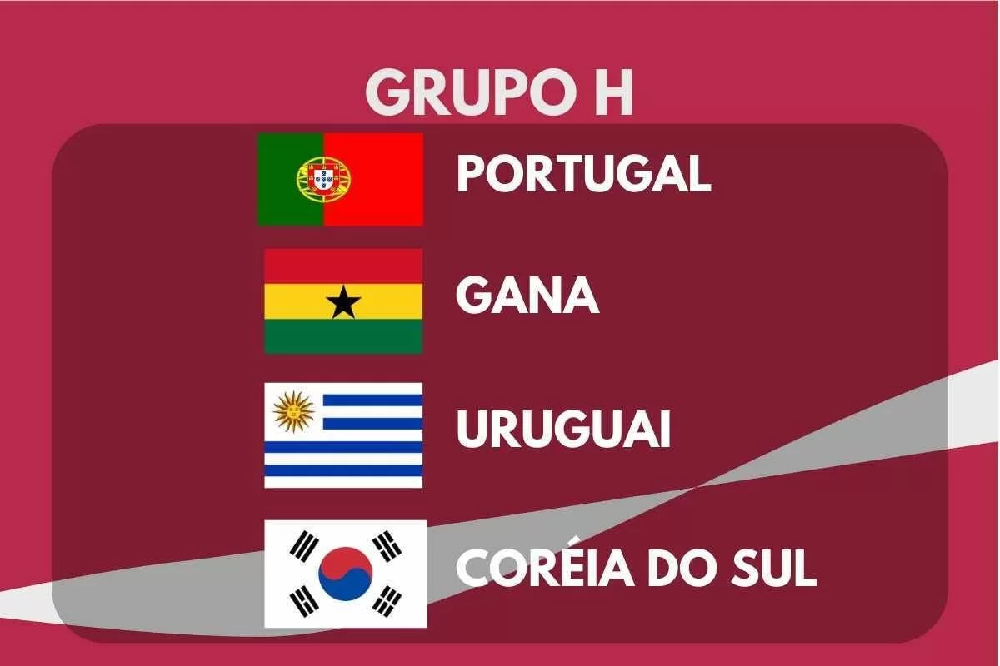

DESCRIÇÃO DO GRUPO
O Grupo H da Copa do Mundo FIFA 2022 terá sua primeira fase de jogos de 24 de novembro a 2 de dezembro de 2022.
O grupo é formado por Portugal, Gana, Uruguai e Coreia do Sul.
As duas melhores equipes avançam para as oitavas de final.
|  |
Encontros anteriores em Copas do Mundo |
| Portugal x Gana |
2014, fase de grupos:
Portugal 2-1 Gana |
| Uruguai x Coréia do Sul |
1990, fase de grupos:
Coréia do Sul 0-1 Uruguai
2010, oitavas de final:
Uruguai 2-1 Coréia do Sul |
| Portugal x Uruguai |
2018, oitavas de final:
Uruguai 2-1 Portugal
|
| Coréia do Sul x Gana |
Nenhum encontro |
| Coréia do Sul x Portugal |
2002, fase de grupos:
Portugal 0-1 Coréia do Sul |
| Gana x Uruguai |
2010, quartas de final: Uruguai 1(4)-1(2) Gana* |
*Com empate de 1 a 1 no tempo normal e 0 a 0 na prorrogação, o Uruguai venceu nos pênaltis por 4 a 2
EQUIPES
| Equipe |
Inscrição |
Confederação |
Método de Qualificação |
Data de Qualificação |
Aparições em Copas do Mundo |
Última Participação |
Melhor Resultado |
Ranking FIFA (Março/2022) |
| Portugal |
H1
(Cabeça-de-chave) |
UEFA |
Vencedor da repescagem C |
29 de março de 2022 |
8 |
2018 |
Terceiro lugar (1966) |
8º |
| Gana |
H2 |
CAF |
Vencedor do grupo C |
29 de março de 2022 |
4 |
2014 |
Quartas de final (2010) |
60º |
| Uruguai |
H3 |
CONMEBOL |
3º colocado da fase única |
24 de março de 2022 |
14 |
2018 |
Campeão (1930, 1950) |
13º |
| Coreia do Sul |
H4 |
AFC |
2º colocado do grupo A |
1 de fevereiro de 2022 |
11 |
2014 |
Quarto lugar (2002) |
29º |
PARTIDAS
Todas as partidas seguem o fuso horário UTC+3 (Horário de Moscow).
Uruguai x Coreia do Sul
| Data/Hora |
Local |
| 24 de Novembro às 16:00 |
Estádio da Cidade da Educação, Doha |
Portugal x Gana
| Data/Hora |
Local |
| 24 de Novembro às 19:00 |
Estádio 947 (Ras Abu Aboud), Doha |
Coreia do Sul x Gana
| Data/Hora |
Local |
| 28 de Novembro às 16:00 |
Estádio da Cidade da Educação, Doha |
Portugal x Uruguai
| Data/Hora |
Local |
| 28 de Novembro às 22:00 |
Estádio Nacional de Lusail, Lusail |
Coreia do Sul x Portugal
| Data/Hora |
Local |
| 02 de Dezembro às 18:00 |
Estádio da Cidade da Educação, Doha |
Gana x Uruguai
| Data/Hora |
Local |
| 02 de Dezembro às 18:00 |
Estádio Al Janoub, Al-Wakrah |
CLASSIFICAÇÃO
| 1º Colocado |
2º Colocado |
| Enfrenta o 2º Colocado do Grupo H, nas Oitavas de Final |
Enfrenta o 1º Colocado do Grupo H, nas Oitavas de Final |